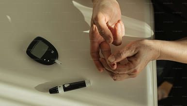
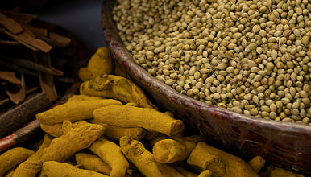
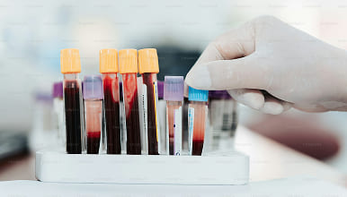

Glucoactive

राहुल की कहानी
चीनी 18 mmol/l. अब 5.4.
"डॉक्टर ने कहा: यह हमेशा के लिए है"
राहुल 54 वर्ष, मुंबई. टाइप 2 मधुमेह का निदान 6 साल पहले हुआ था. इंसुलिन के साथ भी चीनी 18 mmol/l पर बनी रही. हर सुबह एक इंजेक्शन, आहार प्रतिबंध, लगातार कमजोरी. डॉक्टर ने कहा: "इस तरह जीने के लिए तैयार हो जाओ"

📍 मुंबई · टाइप 2 मधुमेह के साथ 6 वर्ष"एक मित्र ने मुझे ग्लूकोएक्टिव दिखाया"
एक सहकर्मी ने आयुष प्रमाण पत्र के साथ एक आयुर्वेदिक परिसर के बारे में बात की. राहुल को संदेह था, लेकिन उसने इसे आज़माने का फैसला किया - रसीद पर भुगतान, कोई जोखिम नहीं.

🌿 ग्लूकोएक्टिव · 50 प्राकृतिक सामग्री · आयुष"कुछ खास नहीं... या नहीं?"
पहले 10 दिन कोई बदलाव नहीं. 12वें दिन सुबह - ऊर्जा का उछाल. 2 सप्ताह के बाद, पहला विश्लेषण: 12.1 mmol/l. 4 साल में पहली बार 14 से नीचे
 📊 विश्लेषण: 12.1 mmol/l · 14 दिन का उपयोग
📊 विश्लेषण: 12.1 mmol/l · 14 दिन का उपयोग
चीनी 5.4. डॉक्टर को इस पर विश्वास नहीं हुआ.
60 दिनों के बाद - निर्धारित निरीक्षण. विश्लेषण: “5{{डॉट}}4 एमएमओएल/एल”. डॉक्टर ने इसे दोबारा लेने के लिए कहा - परिणाम की पुष्टि हो गई. इंसुलिन रद्द कर दिया गया. राहुल रोया- 6 साल में पहली बार बिना इंजेक्शन के।

✅ चीनी 5.4 mmol/l · इंसुलिन रद्द · 60 दिन📊राहुल रिजल्ट
चीनी: 18 mmol/l → 5.4 mmol/l
अवधि: 60 दिन (2 कोर्स)
इंसुलिन: रद्द
💳 रसीद पर भुगतान · 📦 निःशुल्क डिलीवरी · 🔒 अनाम